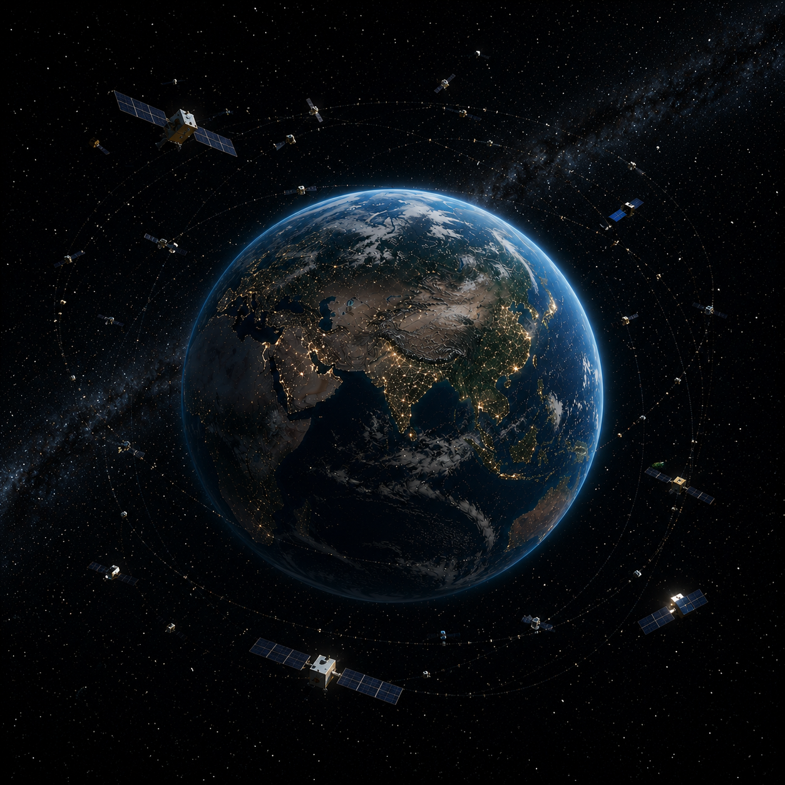

+9
In low Earth orbit, space is no longer sparse as it appeared in 1977—it is increasingly crowded with thousands of active satellites used for communication, GPS navigation, Earth imaging, and global internet systems. Alongside them is a growing field of space debris, fragments from past launches and collisions that now form a persistent hazard for future missions. What was once a near-empty frontier has become an operational layer of infrastructure surrounding the planet. Military surveillance satellites also occupy this space, continuously monitoring Earth in real time for strategic and security purposes. Even space tourism has begun to emerge, with private missions carrying civilians into orbit, marking a shift from government-only exploration to commercial and cultural presence beyond Earth. Compared to 1977, where space was often framed as a distant, untouched realm, it is now an active and contested domain that reflects the complexities of human activity and ambition on a global scale.